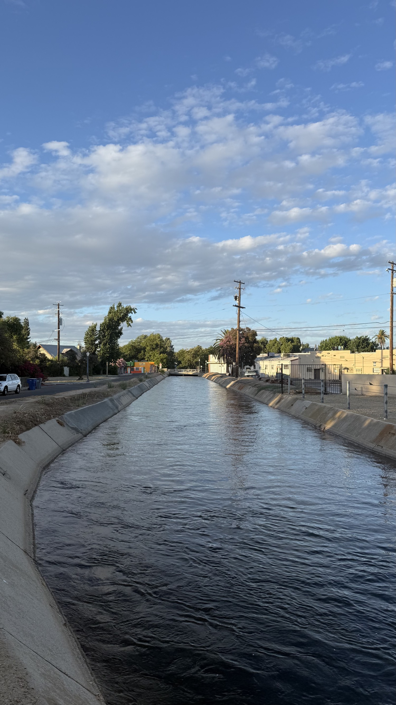
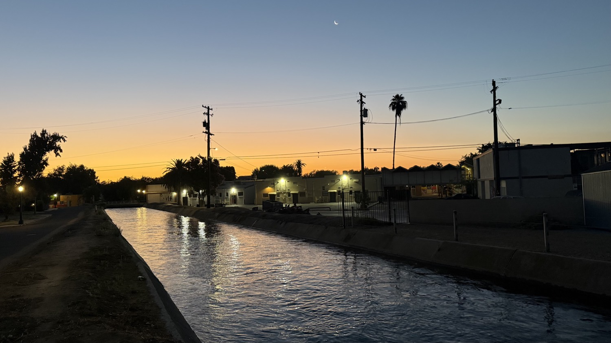
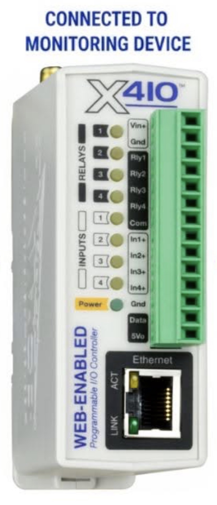
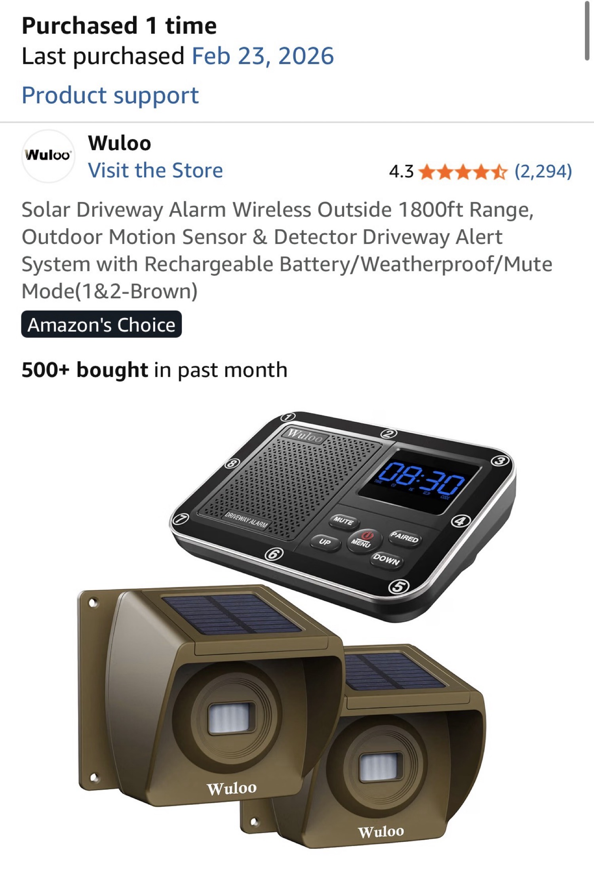
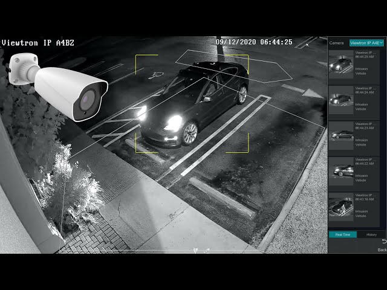

Why the canal bank needs a different kind of watch
The stretch near 721 E La Sierra sits directly against this canal. Under California Penal Code § 374.7, depositing waste matter into a canal or onto the bank or shore within 150 feet of the high-water mark is a misdemeanor. First-offense fines start at $250 and climb with each conviction; courts can also order litter pickup as a condition of probation.
A simple driveway chime is useful. A system that can distinguish a walker from a bicycle from a vehicle, measure approximate speed between two points, and then drive lights or a short verbal warning only when the pattern matches a problem is far more useful — and far less noisy for the neighborhood.
Core pieces already on hand

ControlByWeb X-410
4 relays (1 A, shared common), 4 optically isolated digital inputs (4–26 VDC), 1-Wire bus, built-in web server, task builder, BASIC interpreter, email alerts, logging. Price range roughly $300–400. Designed for edge control without monthly fees.

Wuloo Solar Driveway Alarm
Solar-powered outdoor PIR sensors, claimed 1800 ft wireless range, expandable to multiple sensors (up to 8), indoor receiver with zone LEDs, clock and customizable chimes. Inexpensive long-range detection. Zone indicators and internal logic lines are the integration target.
System architecture in plain terms
Treat the X-410 as the deterministic brain. It does not need cloud permission to close a relay or measure the time between two input transitions. Because the builder has an electrical engineering background and can solder, the preferred path is to open the Wuloo receiver, probe the internal signals that indicate which zone has triggered, and bring those lines out as four clean digital inputs to the X-410.
1. Sensing layer (Wuloo reverse-engineered)
- Open the Wuloo receiver and use a voltmeter (or logic probe/scope) while triggering each sensor to locate lines that go high or low on detection.
- Expect (or search for) a 3-bit binary zone ID plus a 4th latch/strobe or “active” bit — matching the expandable-to-8-sensor design and the visible zone LEDs/touch buttons on the front panel.
- Bring four wires out: the three ID bits and the latch. Buffer them if needed so the X-410 sees clean 4–26 VDC levels. Shared ground is required; keep the receiver’s low-voltage supply isolated from higher-power loads.
- One or two inexpensive IP cameras aimed at the canal bank and approach path for the AI classification layer.
2. Edge logic (X-410)
- The four digital inputs now carry the decoded zone ID + latch from the Wuloo. Additional contact sensors can still be used for precise timing between known distances.
- Conditional tasks and timers: known distance between two physical sensors (or timed zone sequence) → approximate speed.
- Relays drive low-voltage lights, solid-state relays for higher loads, or a small amplifier/speaker for a short recorded warning.
3. Classification layer (local AI)
- Frigate NVR (or similar) running on a used mini-PC or Raspberry Pi 5 + Coral USB accelerator.
- Object detection for person / bicycle / vehicle. Zone filtering so only the canal-bank zone generates events.
- Events published over MQTT or HTTP; a small script or Home Assistant automation calls the X-410 JSON/API to actuate relays.
4. Outputs that manage the environment
- Flash a series of exterior lights after confirmed motion (simple case).
- Different flash patterns or short audio cues for “slow walker near bank” versus “vehicle”.
- Digital signals available for any downstream device that accepts a contact closure or 5–24 V control.
Confirming the reverse-engineering path
Public manuals and FCC filings for similar multi-zone driveway receivers (and the Wuloo’s own documentation of “Alert Zone LED Indicator” plus individual zone touch buttons) make the plan highly plausible. The receiver almost certainly decodes a sensor ID from the RF packet and then drives zone-specific indicators or GPIO lines. A 3-bit binary ID plus a latch/strobe bit is a classic way to present up to eight zones on four lines.
Exact pinout and voltage levels cannot be confirmed without the specific board in hand — no public schematic or teardown of this exact Wuloo model was found. The practical method remains the correct one for an electrical engineer:
- Power the receiver from its normal 4.5–5 V supply.
- Trigger each paired sensor in turn while probing with a voltmeter or logic analyzer around the zone LEDs, MCU pins, and any obvious data/latch lines.
- Once the four lines are identified, buffer them (simple transistor or optocoupler stage recommended) so the X-410 inputs see clean 4–26 VDC signals with adequate hold time (X-410 minimum is 20 ms).
- Share grounds carefully and keep the receiver’s low-voltage domain protected from any higher-power switching.
If the parallel bus proves elusive, a fallback is to tap individual zone LED drivers (one wire per zone) or, at higher effort, decode the RF packets themselves with a separate 433/868 MHz module. The four-wire ID + latch approach is the cleanest target and matches the hardware already on the bench.
What the AI layer actually enables

Basic PIR sensors only report “motion.” With two or more sensors a known distance apart, the X-410 can already compute a crude speed from the time delta. Adding a local vision model upgrades the system:
- Classification — person walking versus bicycle versus vehicle, reducing false triggers from wind, animals, or distant traffic.
- Zone awareness — only the canal-bank zone or the approach path generates actions.
- Speed refinement — multi-frame tracking across cameras improves the estimate beyond simple two-sensor timing.
- Littering pattern — a person lingering or performing a discard motion near the bank can be flagged for review or for a mild automated warning. Full reliable “litter detection” still benefits from human confirmation; the system can at least raise the right events at the right time.
All of this stays on local hardware. No continuous video upload, no subscription for basic detection.
Cost-effective path versus alternatives
Recommended hybrid (lowest ongoing cost, highest control)
- • X-410 already owned or ~$300–400
- • Wuloo already owned (~$100 class) — reverse-engineered for zone ID + latch
- • 1–2 budget RTSP/IP cameras (~$60–120 each)
- • Used mini-PC or Pi 5 + Coral TPU (~$150–300)
- • Buffer transistors/optocouplers, optional contact sensors, relays for lights, small PA or outdoor speaker
- • Software: Frigate + optional Home Assistant — free and open
One-time outlay in the $400–900 range depending on how much is already on the bench. No monthly cloud fees for the core logic. The reverse-engineering step replaces the need for extra contact sensors in many cases.
Commercial cloud systems (Ring, Arlo, Nest, etc.)
Fast to install, good mobile apps, AI features behind subscriptions. Limited ability to drive arbitrary digital outputs or run custom timing logic without extra hardware. Ongoing cost and cloud dependency.
Full Home Assistant + Zigbee/Z-Wave + cameras
Extremely flexible and still local. Higher initial learning curve and more devices to manage. Excellent long-term if the goal expands beyond the canal bank.
Pure industrial expansion
Additional ControlByWeb modules, more inputs and relays, peer-to-peer. Highest reliability, higher unit cost, less native vision AI.
Practical first steps at 721 E La Sierra
- Mount the existing Wuloo sensors for coverage of the approaches and the canal edge. Confirm range and false-trigger rate.
- Open the Wuloo receiver. With a voltmeter or logic probe, trigger each sensor and map the internal signals that indicate zone ID and activity. Aim for three ID bits + one latch/strobe line. Buffer and bring the four wires to the X-410 digital inputs.
- Configure the X-410 inputs to read the binary zone code and use its timers for inter-sensor timing / speed estimates. Log the results.
- Add one camera with a clear view of the bank. Stand up Frigate with a person/vehicle/bicycle model and a zone limited to the waterway corridor.
- Create a small bridge (Node-RED, Home Assistant, or a short Python script) that turns Frigate events into X-410 relay commands. Define the simplest useful output first: a short light sequence after confirmed motion in the protected zone.
On enforcement and community
An automated system that flashes lights or plays a short warning is a deterrent and a documentation tool. It is not a substitute for calling the appropriate authority when a clear violation of Penal Code 374.7 is observed. The High Tower District has already shown that organized, factual reporting improves outcomes. This design simply makes the observation layer more precise and less burdensome.
Closing reflection
The combination of a web-enabled industrial I/O controller, reverse-engineered zone signals from inexpensive solar motion sensors, and a modest local AI stack produces a perimeter that is both programmable and capable of the kind of classification that pure PIR systems cannot deliver. The X-410 keeps the critical decision path offline and deterministic. The AI layer reduces noise. The canal gets a quieter, smarter form of attention.
For the High Tower District the practical question is not whether to buy another cloud subscription. It is whether a few hundred dollars of hardware, an evening of careful probing and soldering, and a weekend of configuration can turn an ordinary property line into a useful, shareable model for protecting the waterway that runs through the neighborhood.
Sources
- ControlByWeb X-410 product specifications and documentation — controlbyweb.com (digital inputs 4–26 VDC, 20 ms minimum hold)
- California Penal Code § 374.7 (littering or dumping into or within 150 feet of a waterway) — leginfo.legislature.ca.gov
- Wuloo / QH-series solar driveway alarm product literature and user manuals (zone LED indicators and expandability to 8 sensors)
- Common multi-zone RF receiver patterns and similar driveway-alarm integration examples
- Frigate NVR project documentation for local object detection
- Local observation and design notes for 721 E La Sierra Drive, Fresno, California